Choose Democracy
Four hundred drawings that have to stay one drawing: an illustrated choose-your-own-adventure where every branch has to look like it came from the same hand.
Choose Democracy is a nonprofit that trains people in nonviolent civic action. Since 2021 I have made their visual work: the illustrations inside their interactive book, the animation on their YouTube channel, and the hero art on their website.
The animation
Their most-watched video, made with the organisation’s director, Daniel Hunter. He wrote it; I drew and animated it. The job of the art is to hold a viewer through an argument that is mostly abstract nouns — the drawings are what make it concrete enough to follow.
hosted on youtube · nothing is loaded until you play it
three more from the channel · each loads only when you play it
The website illustrations
Larger, more finished pieces that sit at the top of a page and set the register before anyone reads a word. Each one is doing an explanatory job, not decorating.
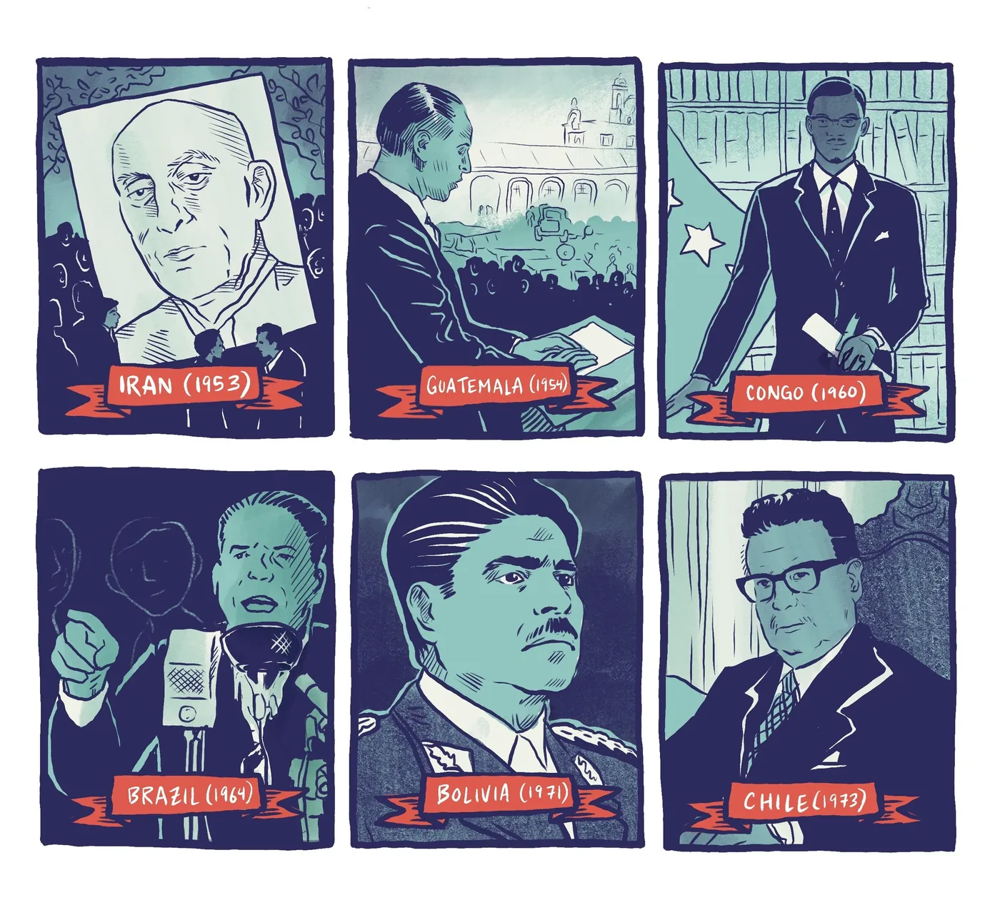
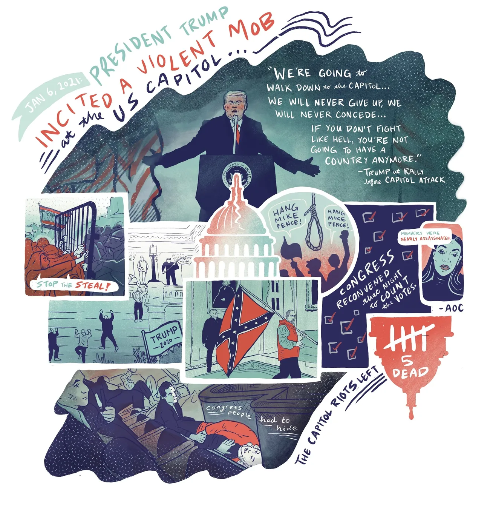
Inside the interactive book
Eighteen of the four hundred. Every one sits at a decision point, which is why they are small, quick to read and drawn to the same weight — a reader meets them one at a time, between choices.
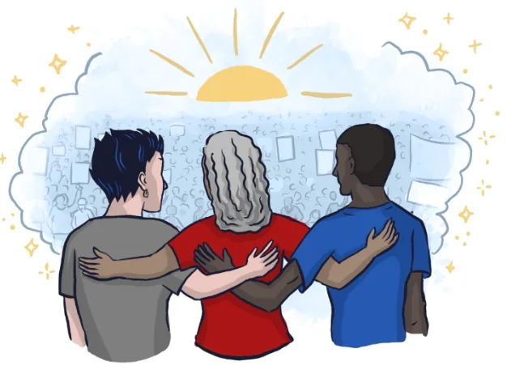
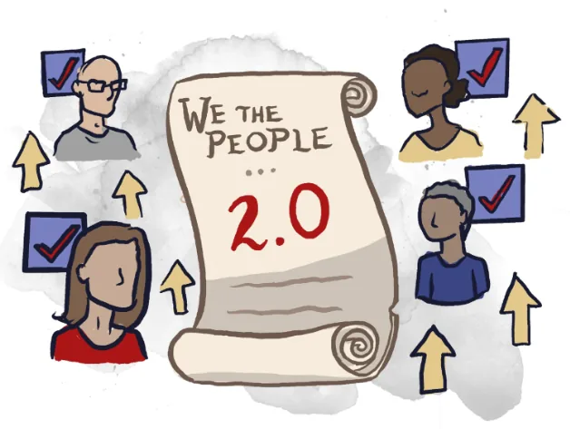
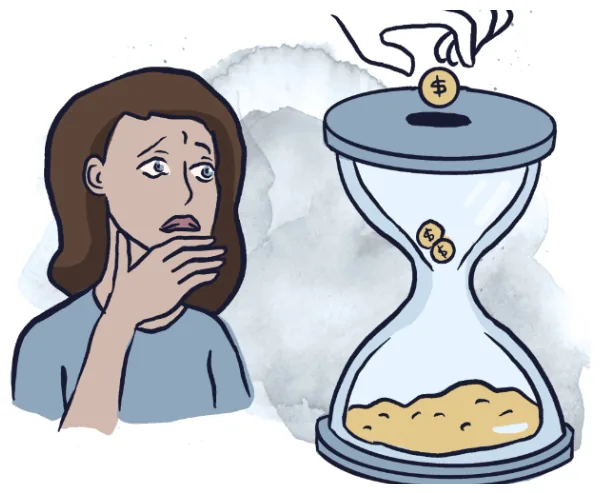
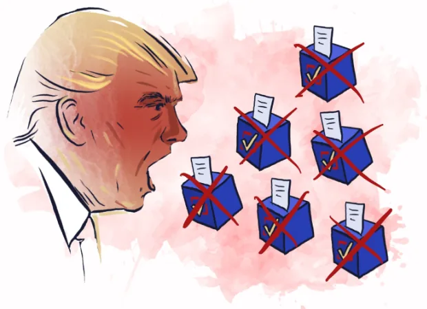
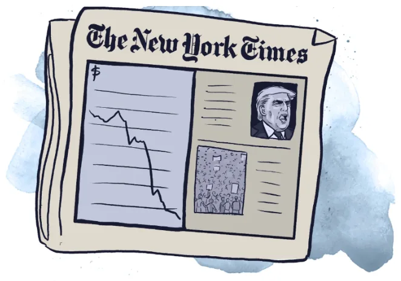
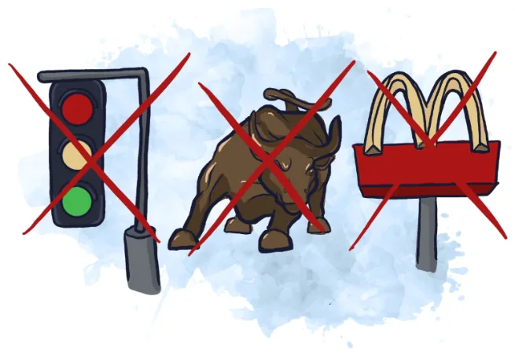
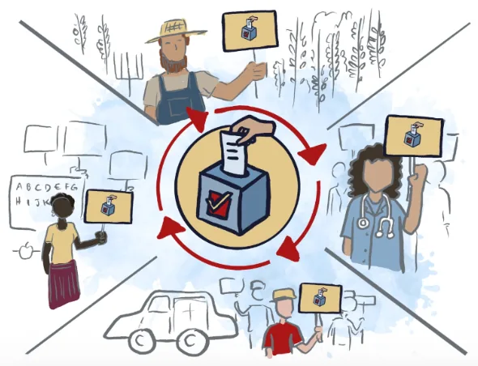
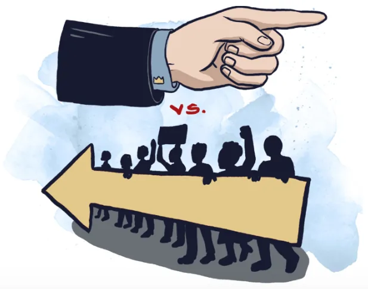
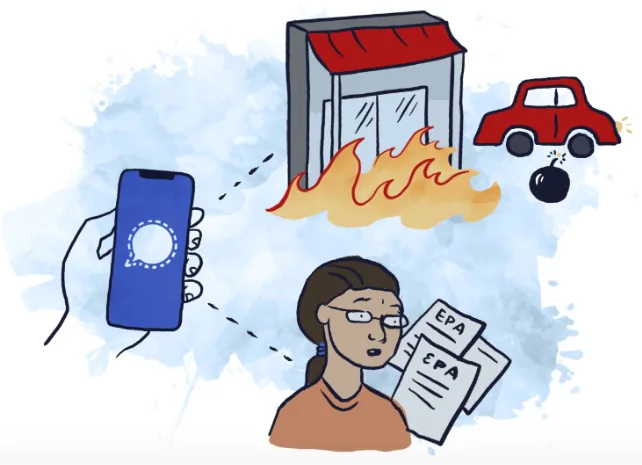
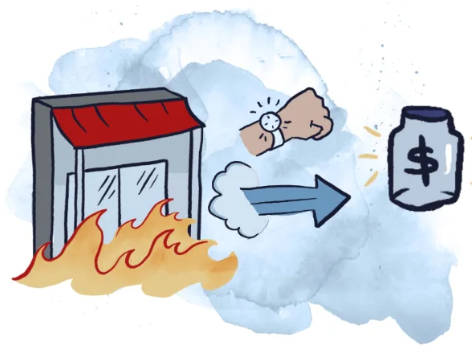
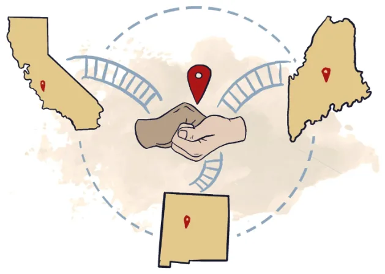
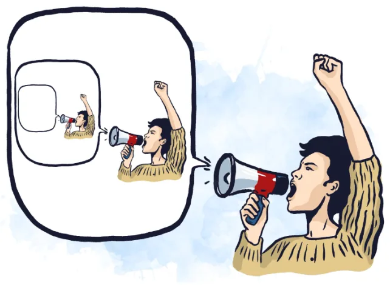
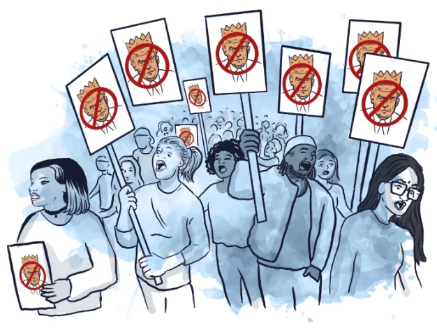
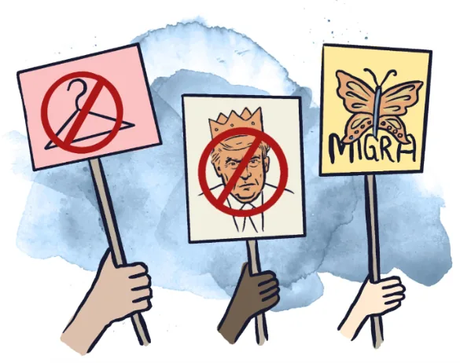
tap any drawing to open it full size
Take the adventure yourself
The choose-your-own-adventure the 400 drawings live inside, on the client’s own site.
four hundred drawings, one style
A choose-your-own-adventure is not a book with pictures in it. Every decision point forks, and every fork needs art, so the page count is not the drawing count — the drawing count is however many endings you are willing to write. This one came to over four hundred.
The hard part is not volume, it is consistency. A reader who takes one route and a reader who takes another have to come away thinking they read the same book. That means the same faces recurring correctly across branches they will never see side by side, the same weight of line, the same crowd density, the same restraint about detail — held across hundreds of drawings and, by now, several years.
It had to work in two places at once: on screen, where a reader taps through, and in print, where the same art is fixed on a page. One set of drawings serves both, which constrains how much you can lean on colour or scale to do the storytelling.
drawing an argument
The videos take subjects that live entirely in abstract language — what a democracy is, what people can actually do when one is under strain — and have to make them watchable. Text on screen does not solve that. A viewer will read one line and then need something to look at.
So the drawings carry the structure: the argument is broken into moments that can each be seen, and the animation moves between them at the speed the script needs rather than the speed the art wants. That collaboration ran directly with Daniel Hunter, the organisation’s director, who wrote the scripts.
the website art
The site needed a small number of larger, more finished pieces — the ones that sit at the top of a page and set the register before anyone reads a word. Denser and more resolved than the book illustrations, and made to survive being cropped hard at different screen widths.
the honest part
Four years into a house style, the style is the constraint. A drawing I would make differently today still has to match one from 2021, because a reader moving through the book cannot see a seam. That is the correct trade — consistency is the whole product — but it does mean the work does not visibly improve on the page, and I would not pretend otherwise.
It is also openly political work for an advocacy client. It belongs here because it is four years of sustained illustration at volume under a fixed system, which is a thing worth showing; the position is the client’s.
open to marketing operations, analytics and martech roles
Let’s talk.
Remote, or Albuquerque and hybrid. If you want the architecture behind any of the work here, ask me and I will walk you through it.